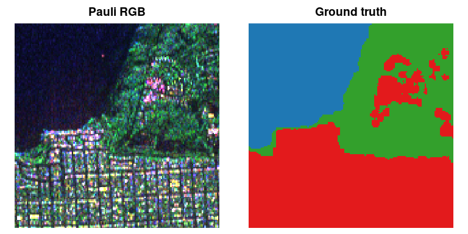
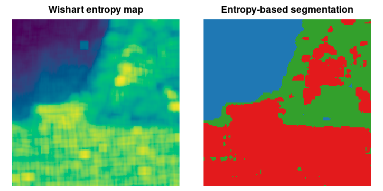
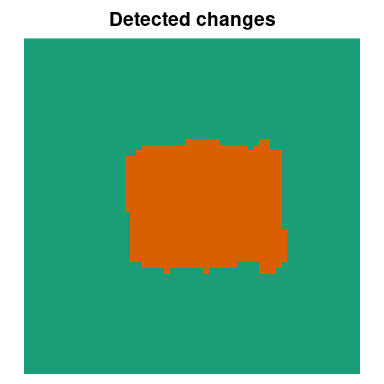

Information Theory, Geometry and Statistics for Synthetic Aperture Radar Data
SITSAR brings together statistical models, information-theoretic measures and image-analysis tools for Synthetic Aperture Radar (SAR) and polarimetric SAR (PolSAR) data. It gathers the methods developed in the master’s dissertation (divergence-based classifiers) and in the PhD thesis (Shannon entropies, entropy-based segmentation and change detection, and compound Wishart models) of Jodavid A. Ferreira, supervised by Abraão D. C. Nascimento (UFPE, Brazil).
The main tools are R6 classes, and the classifiers are available as a parsnip model, so they work inside tidymodels workflows (recipes, resampling, tuning and yardstick metrics).
| Topic | Tools |
|---|---|
| Intensity models |
dg0i()/pg0i()/qg0i()/rg0i(), *gammasar(), *ggamma()
|
| Matrix (PolSAR) models |
dwishart_sar(), dg0p(), dctpcw(), dcgcw() and generators |
| R6 models (ML/EM estimation, entropy, variance) |
GammaSAR, G0I, GGammaSAR, WishartSAR, G0Polarimetric, CompoundWishart
|
| Shannon entropies |
entropy_gamma(), entropy_g0i(), entropy_ggamma(), entropy_wishart(), entropy_g0p()
|
| Images |
SARImage, sar_features(), entropy_map(), plot_map()
|
| Segmentation |
EntropySegmenter (EM / SEM), segment_sar()
|
| Hypothesis tests and change detection |
entropy_test(), change_map(), change_detection_metrics()
|
| Divergences and classification |
divergence_gaussian(), divergence_wishart(), distancesg0i(), DivergenceClassifier, divergence_classifier()
|
| Accuracy | kappa_statistics() |
Installation
# From CRAN
install.packages("SITSAR")
# Development version from GitHub
# install.packages("remotes")
remotes::install_github("jodavid/SITSAR")A PolSAR image
The package ships a 150 x 150 crop of the L-band AIRSAR image of San Francisco (SanFrancisco150) and its ground truth (SanFrancisco150_gt).
library(SITSAR)
img <- SARImage$new(SanFrancisco150, looks = 4)
img
#> <SARImage> 150 x 150 PolSAR (3 x 3 covariance)
#> channels: HH, HV, VV
#> looks: 4
#> mean HH = 0.1735
#> mean HV = 0.04224
#> mean VV = 0.147
op <- par(mfrow = c(1, 2))
img$plot()
plot_map(SanFrancisco150_gt, main = "Ground truth",
palette = c("#1f78b4", "#33a02c", "#e31a1c"))
par(op)Models, estimation and Shannon entropy
set.seed(1)
x <- rg0i(1000, alpha = -3, gamma = 2, L = 4)
fit <- G0I$new()$fit(x) # maximum likelihood (alpha, gamma and L)
fit
#> <G0I> fitted to n = 1000 observations
#> alpha = -3.95788
#> gamma = 2.80374
#> L = 3.00607
#> logLik = -835.636
#> Shannon entropy = 0.835636
fit$entropy_variance() # asymptotic variance of the entropy estimator
#> [1] 0.001158187
generics::tidy(fit)
#> # A tibble: 3 × 4
#> term estimate std.error fixed
#> <chr> <dbl> <dbl> <lgl>
#> 1 alpha -3.96 0.531 FALSE
#> 2 gamma 2.80 0.469 FALSE
#> 3 L 3.01 0.311 FALSE
# Polarimetric models
Sigma <- polsar_example_sigma("forest")
Z <- rg0p(500, alpha = -4, Sigma = Sigma, L = 4)
G0Polarimetric$new()$fit(Z, L = 4)$params$alpha
#> [1] -4.028688Entropy maps and unsupervised segmentation
H <- entropy_map(img, model = "wishart", window = 7, L = 4)
set.seed(2)
seg <- EntropySegmenter$new(k = 3, method = "em")$fit(H)
op <- par(mfrow = c(1, 2))
plot_map(H, main = "Wishart entropy map")
plot_map(seg$label_map(), main = "Entropy-based segmentation",
palette = c("#1f78b4", "#33a02c", "#e31a1c"))
par(op)
kappa_statistics(SanFrancisco150_gt, seg$label_map(), match = TRUE)
#> # A tibble: 1 × 5
#> kappa variance std_error overall_accuracy n
#> <dbl> <dbl> <dbl> <dbl> <dbl>
#> 1 0.914 0.00000566 0.00238 0.945 22500Divergence-based classification with tidymodels
library(parsnip)
library(workflows)
library(recipes)
library(yardstick)
feats <- sar_features(img, window = 5)
feats$class <- factor(as.vector(SanFrancisco150_gt),
labels = c("ocean", "vegetation", "urban"))
set.seed(3)
train <- feats[sample(nrow(feats), 450), ]
spec <- divergence_classifier(divergence = "renyi", order = 0.9) |>
set_engine("wishart")
rec <- recipe(class ~ ., data = train) |>
update_role(row, col, new_role = "id")
wf_fit <- workflow(rec, spec) |> fit(data = train)
pred <- augment(wf_fit, feats)
accuracy(pred, truth = class, estimate = .pred_class)
#> # A tibble: 1 × 3
#> .metric .estimator .estimate
#> <chr> <chr> <dbl>
#> 1 accuracy multiclass 0.952Entropy-based change detection
set.seed(4)
before <- matrix(rgammasar(60 * 60, mu = 1, L = 4), 60)
after <- before
after[21:40, 21:45] <- rgammasar(500, mu = 3, L = 4)
cd <- change_map(before, after, model = "gamma", window = 5, L = 4)
cd
#> <Entropy-based change map> model: gamma | level: 0.01
#> size: 60 x 60
#> changed pixels: 611 (16.97%)
plot_map(cd$change, main = "Detected changes")
Learn more
-
vignette("SITSAR")— getting started; -
vignette("tidymodels", package = "SITSAR")— divergence-based classifiers with tidymodels; - the package website: https://jodavid.github.io/SITSAR/.
References
- Ferreira, J. A., Coêlho, H. and Nascimento, A. D. C. (2021). A family of divergence-based classifiers for Polarimetric Synthetic Aperture Radar (PolSAR) imagery vector and matrix features. International Journal of Remote Sensing, 42(4), 1201–1229. doi:10.1080/01431161.2020.1826060
- Ferreira, J. A. and Nascimento, A. D. C. (2020). Shannon entropy for the GI0 model: a new segmentation approach. IEEE JSTARS, 13, 2547–2553. doi:10.1109/JSTARS.2020.2997666
- Ferreira, J. A., Nascimento, A. D. C. and Frery, A. C. (2022). PolSAR models with multimodal intensities. Remote Sensing, 14(20), 5083. doi:10.3390/rs14205083
- Nascimento, A. D. C., Ferreira, J. A. and Frery, A. C. (2023). Unsupervised segmentation of PolSAR data with complex Wishart and G0m distributions and Shannon entropy. Statistics and Computing, 33, 129. doi:10.1007/s11222-023-10298-0
- Ferreira, J. A. (2017). Classificadores induzidos de divergências para modelos vetoriais e para distribuição Wishart complexa: experimentos em imagens PolSAR. Master’s dissertation, UFPE.
- Ferreira, J. A. (2021). Entropias e somas compostas para matrizes estocásticas aplicadas a sistemas PolSAR. PhD thesis, UFPE.
Citation
citation("SITSAR")Authors
- Jodavid Ferreira (author, maintainer) — ORCID 0000-0002-2131-6464
- Abraão Nascimento (author) — ORCID 0000-0003-2673-219X